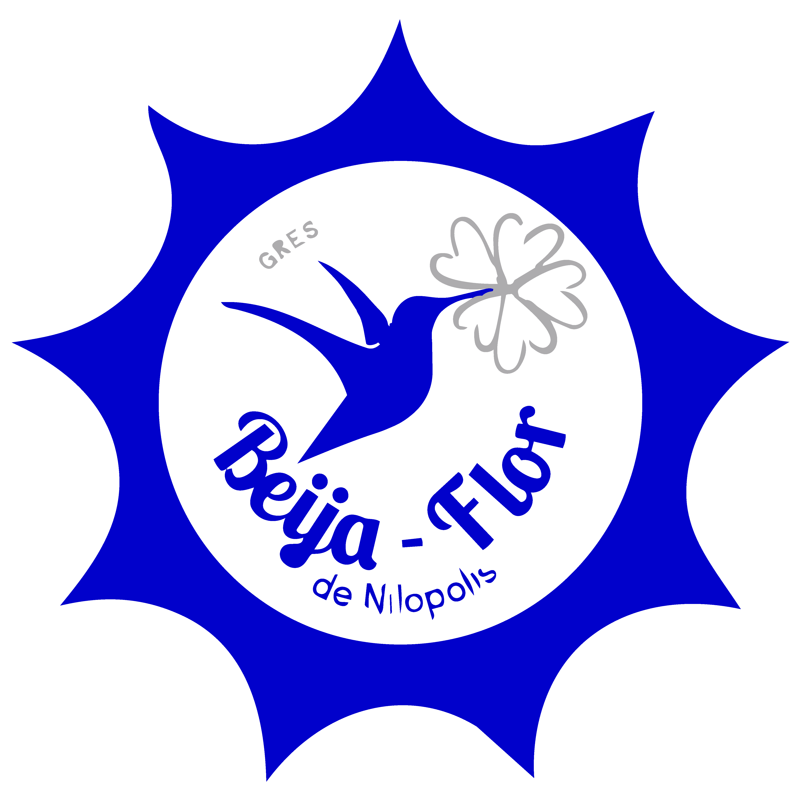

Clique para saber mais sobre a escola de samba Acadêmicos de Niterói.
Clique para saber mais sobre a escola de samba Acadêmicos do Salgueiro.
Clique para saber mais sobre a escola de samba Beija-Flor de Nilópolis.

Clique para saber mais sobre a escola de samba Estação Primeira de Mangueira.
Clique para saber mais sobre a escola de samba Grande Rio.
Clique para saber mais sobre a escola de samba Imperatriz Leopoldinense.
Clique para saber mais sobre a escola de samba Mocidade Independente de Padre Miguel.
Clique para saber mais sobre a escola de samba Paraíso do Tuiuti.
Clique para saber mais sobre a escola de samba Portela.
Clique para saber mais sobre a escola de samba Unidos da Tijuca.
Clique para saber mais sobre a escola de samba Unidos de Vila Isabel.
Clique aqui para saber mais sobre a escola de samba Unidos do Viradouro.